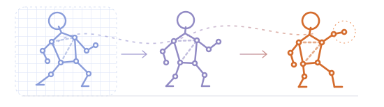
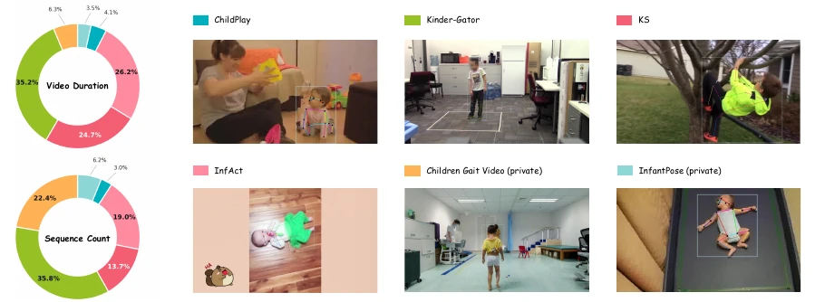
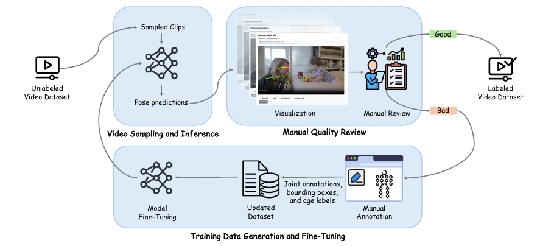
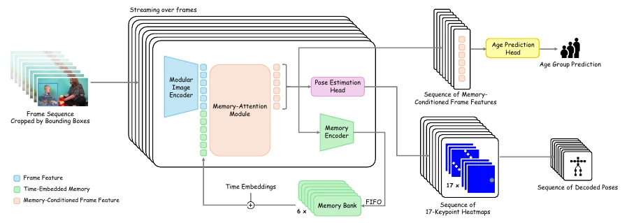
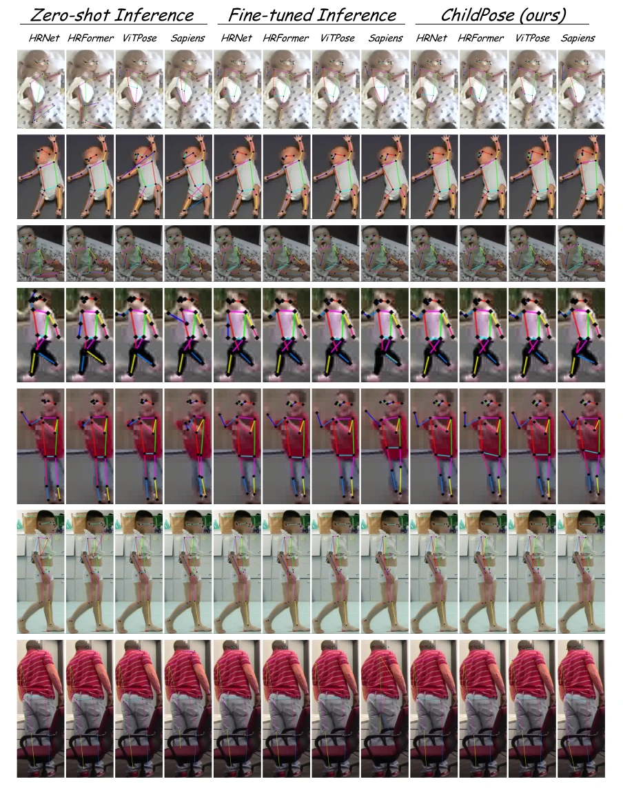

Public source
ChildPlay
Natural social interaction and gaze in videos with children, peers and caregivers.

1 PediaMed AI2 University of Illinois Urbana-Champaign
NeurIPS 2026
Can a model turn videos of children into stable 2D poses, even when individual frames are blurred or occluded?
We introduce ChildPose, a modular video pose model for pediatric movement. It learns developmental cues through age-aware co-training and uses a short memory of past frames to estimate the current pose. We test it across four encoder families on children held out of training.
The Children Pose Dataset combines six sources covering infant postures, social interaction, structured motion, everyday actions and clinical gait.

Public source
Natural social interaction and gaze in videos with children, peers and caregivers.
Public source
Infant sitting, crawling, rolling and spontaneous movement in home videos.
Public source
Structured motion from children aged 5–9, with adult reference motion in the source.
Public source
A child-centered Kinetics subset with varied actions, viewpoints and backgrounds.
Private recordings
Supine infant movement from General Movements Assessment recordings.
Private recordings
Multi-view pediatric walking with expert Edinburgh Visual Gait Score assessments.
Reviewers accept anatomically plausible, temporally stable predictions and send representative failure frames for manual keypoint, box and age annotation. Corrected cases then improve the next round’s annotator.

Starting from Sapiens-2B, each round sampled 200 clips at random. About 95% of sampled clips passed review in the final round.
Eight frames at 5 FPS, with COCO-17 joints and SAM3 child boxes. Windows with mean keypoint confidence below 0.7 were filtered.
2,088 raw videos for training and 522 for validation and test combined. Children in either held-out partition are absent from training.
Reliable age labels cover 487,397 of 976,551 training windows (49.91%) and 759 of 3,061 training clips (24.80%), including 30 mixed-age clips. Windows without reliable age labels still supervise pose.
Percentages describe the age-labeled subset. The corpus includes additional training windows without age metadata.
ChildPlay uses CC BY-NC 4.0 and InfAct has a non-commercial research license. Kinder-Gator is publicly released by its originating lab. KS annotations cover a subset of Kinetics-600, with the original video and platform terms applying. InfantPose and raw CGV recordings are private. The underlying CGV resource is listed under CC BY-NC 4.0 in the paper.
InfantPose includes 20,748 clinician-annotated images with 21 refined keypoints and 15 million unlabeled frames from 5,187 videos. CGV contributes multi-view walking and EVGS annotations from a resource of 339,236 frames and 110 subjects aged 3–17. Children Pose uses a shared COCO-17 schema across sources.
Children Pose combines real RGB video, temporally ordered labels and broader age and capture coverage. The comparison below includes BabyPose, In-Motion Poses, MINI-RGBD, SyRIP and Multiview Child Motor Development.
The originating studies report IRB approval 202106202 and parent or guardian consent. Private recordings were de-identified before access and remain on controlled servers. Release plans cover appearance-free annotations for eligible subsets under CC BY-NC 4.0 with a data use agreement. Checkpoints follow the strictest upstream backbone terms.
Public sources were used under their original terms. For web-derived sources, the planned release includes annotations and video identifiers. Body shape and gait carry residual re-identification risk even after face blurring. The responsible-use policy prohibits re-identification, identity linkage and covert monitoring.
ChildPose estimates 17 keypoints per frame using a modular image encoder, a causal memory bank and an age-aware training objective.

HRNet, HRFormer, ViTPose and Sapiens expose dense spatial features through a common token interface. The ChildPose pose head upsamples them into 17 heatmaps and decodes each joint from the heatmap peak.
Current-frame self-attention is followed by cross-attention to the six most recent encoded states with learned relative time embeddings. A FIFO queue bounds the amount of context.
A temporal transformer pools frame features and predicts an age group through a classification token. This auxiliary branch uses reliable age labels during training and is omitted during pose inference.
Pose. Weighted mean squared error supervises Gaussian joint heatmaps, masking missing joints and downweighting uncertain ones.
Temporal. Soft-argmax coordinates yield consecutive-frame distances normalized by the mean square-root box area. The model minimizes average jitter, confidence-weighted jitter, and the absolute change in confidence between adjacent frames.
Age. Cross-entropy supervises the six age groups on windows with reliable labels. The respective weights for pose, jitter, confidence-weighted jitter, soft flicker and age are 1, 0.2, 0.2, 0.2 and 1.
Training uses four NVIDIA L40S GPUs. Crops expand child boxes by 1.1×, use bicubic resizing and apply ImageNet normalization. Confidence thresholds of 0.35 and 0.7 separate missing, uncertain and confident labels. AdamW uses a cosine schedule, a default learning rate of 10−4, a backbone rate of 10−5 and weight decay of 0.01. Checkpoints are selected by validation pose or age accuracy, according to the phase.
Memory uses 512-dimensional encoded features and one attention block. The pose head uses two transposed-convolution upsampling layers. The age branch uses prefix-token attention when available and mean pooling otherwise. Training soft-argmax uses temperature 0.3.
We evaluate 2D pose accuracy and video stability on children absent from training. Models receive the same child bounding boxes within each benchmark.
The official COCO API computes Object Keypoint Similarity (OKS) using visible labeled keypoints, per-joint tolerances and ground-truth person scale. AP and AR average across OKS thresholds 0.50–0.95 in increments of 0.05. AP50 and AP75 use single OKS thresholds. Predictions map from crop coordinates to the original image before scoring.
Jitter averages scale-normalized joint displacement over annotated adjacent frame pairs. CWJ weights each pair by the product of its confidence scores. Both measures can rise during valid rapid motion. Flicker measures the share of pairs where a joint crosses the 0.3 confidence threshold between frames.
01 · Paper Table 1
We compare ChildPose with standard image-based fine-tuning across four encoder families on the full subject-held-out test set. ChildPose improves AP over encoder-matched fine-tuning in all four families. The ViTPose-B variant reaches 0.8956 AP, 0.9409 AP75 and 0.0000 flicker.
02 · Paper Table 8
We run publicly released pose checkpoints on the same held-out children before any fine-tuning on Children Pose. These results show how well pretrained estimators transfer directly to pediatric video and provide a reference for the fine-tuned benchmark.
03 · Paper Table 3
We compare ChildPose with MotionBERT, which refines sequences of detected 2D joints, and SHaRPose, which estimates poses frame by frame. Jointly fine-tuned MotionBERT reaches 0.8343 AP with ViTPose-B. The strongest SHaRPose configuration reaches 0.8872 AP, while ChildPose reaches 0.8956 AP with 0.0000 flicker.
04 · Paper Table 9
We train and evaluate ChildPose and its ViTPose-B baselines on a subject-held-out split built solely from four public sources. Relative to fine-tuned ViTPose-B, ChildPose raises AP from 0.8673 to 0.8761 and AP75 from 0.9197 to 0.9338.
05 · Paper Table 2
We add temporal memory, temporal losses and age co-training in stages across six encoder variants. Memory raises AP in all six. The other components have smaller, backbone-dependent effects, with age supervision improving AP in five variants and reducing it for Sapiens-0.3B.
06 · Paper Table 10
We vary memory capacity by truncating a trained six-slot checkpoint at inference and by retraining models from scratch. Retraining without memory yields 0.8625 AP, while truncating to zero slots after training yields 0.8918 AP. Gains level off at short context lengths.
07 · Paper Table 11
We keep the ChildPose checkpoint fixed and compare plain argmax, quarter-pixel and DARK refinements, and flip testing. The reported benchmark uses single-pass argmax and linear crop-to-image mapping. Combining flip testing with DARK raises AP from 0.8956 to 0.9032.
08 · Paper Table 7
We time ChildPose–ViTPose-B and standard fine-tuned ViTPose-B on one L40S at FP16 and batch size 1. The test uses 2,048 preprocessed frames from 16 videos and resets memory for each video. After the first six frames, ChildPose adds 1.145 ms per frame and reaches 163.74 FPS, with 18.178M additional inference parameters.
The experiments cover top-down 2D pose with provided boxes. Stability diagnostics alone cannot establish motion faithfulness, and the full dataset cannot be released. Deployment requires setting-specific validation, privacy safeguards and human oversight, including fairness evaluation for unannotated factors such as skin tone, body habitus and clinical condition.
ChildPose may support research in pediatric movement, assistive video understanding and child-centered interaction. The responsible-use policy prohibits using the model for standalone clinical decisions.
09 · Paper Figure 4
We compare pose overlays from zero-shot inference, single-frame fine-tuning and ChildPose. Each panel shows the same frame and encoder family so you can compare joint placement across the three settings.

@inproceedings{chen2026childpose,
title = {{ChildPose}: Foundation for Children Pose Modeling},
author = {Chen, Jiakai and Shen, Yifan and Li, Boyi
and Dong, Chuanmiao and Cao, Xu},
booktitle = {Advances in Neural Information Processing Systems},
year = {2026}
}